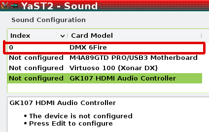
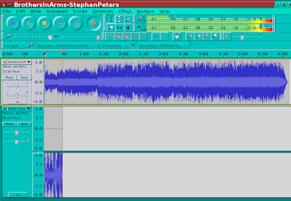
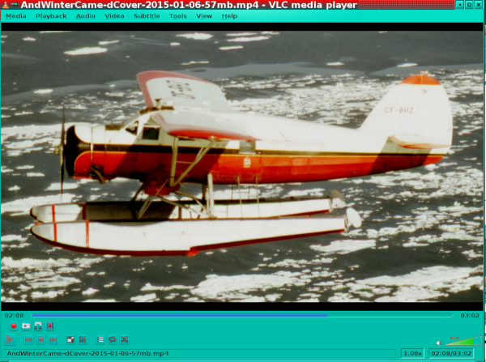
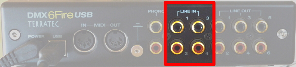
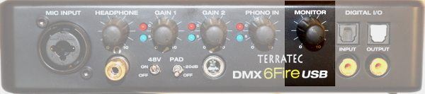

Setting up and using a TerraTec DMX-6Fire-USB external soundcard
I cannot comprehend that people who have been making this, no doubt enviable, piece of hardware (DMX 6Fire details here) for almost 10 years, all of it without Linux support or an all-inclusive manual, haven't to this date so much as written up something like this page, and that I, a total novice, have to fumble my way through mountains of gossip spread all over the net! Nor can I stand 2-yard names so I'll abbreviate the interfaces name to 6fire.
Using the 6fire external soundcard under Linux [OpenSuse at time of writing]
If my information is correct there are 3 chipsets involved:
- Xilinx (Spartan XC2S100E programmable FPGA with 2700) cells
- Cirrus Logic (CS42426-CQZ 6 channel audio IC with PLL 114 dB / 192 KHz)
- Cypress (CY7068013A for the USB 2.0 port)
Externally, no USB connection to computer
The guitar is connected to the 6Fire guitar jack and the 6Fire Line-Out #1 is plugged into the onboard (NOT 6Fire) sound card line-In connector. Audacity using ALSA and normal hardware selections allows recording or overdubbing (as per preferences). The advantage is that the 6Fire sends a cleaner signal to the sound card than the guitar alone would. Actually I think that the term overdubbing may be premature here because what is being done is listening to a track while recording another. Any overdubbing as such will only happen when the two are saved as a mix (I do of course reserve my right to be completely wrong about this).
Internally, as the system sound card, via the computer USB provisions
The kernel module (i.e. driver) is included in most recent kernels. It is auto enabled on hot-plug and the fact will be shown by typing the following into a terminal.
$ lsmod
snd_usb_6fire 33829 2
Tip - In this tutorial, text following the $ symbol is to be inputted into a terminal, followed by pressing the return key. The line below the input is the output from the command that you will see in your terminal.
The firmware is another story.
Go to https://www.alsa-project.org/main/index.php/Matrix:Module-usb-6fire and download the firmware. From the following files/tools folder -
- https://sourceforge.net/projects/sixfireusb/files/tools/
- fwinst.txt (the readme)
- fwints.sh
Install the firmware (probably not on your system yet).
- be connected to the net [a questionable security issue, should be download first, then installed]
- cd to the hosting folder
- as root do
# sh fwinst.sh
... and observe the output:
Checking for firmware directory...done.
Downloading windows driver...done.
Checking MD-5 checksum of windows driver...done.
Unpacking windows driver...done.
Extracting firmware files...done.
Checking MD-5 checksums of firmware files...done.
Installing firmware files...done.
Installation completed.
This will create a folder
/lib/firmware/6fire
and populate it with:
dmx6fireap.ihx 25.4kB/24.8KiB
dmx6firecf.bin 72.7kB/71KiB
dmx6firel2.ihx 16.9kB/16.5KiB
firmware MUST be up to date, the following also worked:
ftp://195.220.108.108/linux/Mandriva/devel/cooker/x86_64/media/non-free/release/6fire-firmware-1.23.0.02-1-mdv2012.0.noarch.rpm
which gave files of a different size
dmx6fireap.ihx 24.9kB/24.3KiB
dmx6firecf.bin 72.7kB/71.0KiB
dmx6firel2.ihx 16.6kB/16.2KiB
There is a further problem with YaST, the Suse admin valet.
It sees 6Fire under hardware.

It recognizes the card but ...

... the attempt to set it up BOMBS because ...
... YaST is trying to load the wrong driver (kernel) module ...
The correct module should be what the OS uses:
$ lsmod
snd_usb_6fire 33829 2
All this means is that YaST cannot set it up, fortunately it gets set up automatically without YaST.
To make sure that the 6Fire IS the card being tested, disable (delete) all other sound cards in YaST without attempting to use YaST to set up the 6Fire (see above).
Since we've just seen that YaST is no shining star we can back up this interdiction by adding (in the case of Suse) a blacklist entry to the onboard sound cards (mine shown: /etc/modprobe.d/50-blacklist.conf). I had a ghost card in there (virtuoso) and this took it out after a blacklisted reboot.
####################################
blacklist snd_virtuoso
blacklist snd_hda_intel
####################################
We are now in a position to test the 6Fire, confident that no other card will play any role!
We make sure (as earlier) that the 6Fire driver (kernel) module IS in fact loaded.
$ lsmod
snd_usb_6fire 33829 2
$ alsamixer
... brings up the mixer in terminal
This will probably be done automatically later but it's a good idea to have a feel of what to look for when things head south. "MM" shows muted channels and touching "M" will unmute them. F6 pops a card selector, note that the other cards got properly interdicted, only the 6Fire shows, select it and press Return .
And now for the beef!
Load Audacity and observe that the dropdown menus resemble what is shown here; namely that the 6Fire is ready as a MIC input for recording as well as as a sound output. In preferences under Devices observe the 6Fire as having been recognized, and that 2 track recording is the pref. Then under R Recording select Overdub and Software-Playthrough. Now when you hit play you should hear the loaded track and if you start playing you'll see the recording being made. If you see the annunciator in the top right but hear no sound then maybe your speaker hookup is faulty or the volume is low; investigate.

If your preferences show single-track recording then you might get this:
Only the wrong track is being recorded. There are surely some ways to deal with this, I just noticed that 2-track recording simply prevented the issue.
NB. After all this don't forget to un-blacklist the other soundcards manually and/or in YaST. With the resulting normal setup Audacity will give the option to use whatever soundcard might suit your fancy for output. In the above exercise I isolated down to the 6Fire to make sure that it was the one being used.
Finally test out a few other audio apps, like loading a video into VLC.

...and listen to the audio coming down in this case via ALSA which as we saw earlier was using the 6Fire external soundcard.
Some other ways to hook up
Let's say you want to record a clean guitar sound on top of a *.wav file loaded into Audacity on your laptop using the amp only to get more monitoring volume than the laptop can give. Most amps have an AUX input that you can plug either the 6fire headphone line or the computer headphone line into. The 6fire headphone output can of course also serve headphones.
Note that the 6fire guitar jack is NOT for acoustic microphones regardless of what instrument they might be used with! Use MIC-INPUT for acoustic mics.
If you have to practice with headphones and are using a modelling amp, like a Fender Mustang, you can do any of the following:
- 6fire to any computer USB-2 port
- 6fire headphone jack to headphones
- 6fire Line-In 1 pair to amp headphone out (same as amp output)
- guitar to amp as per normal
NB. using a netbook of the type shown may be inadequate and result in a lot of skipping. I'm currently looking for something no bigger but with deathstar capabilities. I have not found any so far, except for the ruggedized jobs that cost a fortune!
Using the 6Fire with JACK and Audacity
As in the previous examples the first thing to do is to
- power up the 6Fire (USB devices should always be live before plugging-in)
- plug it into a good motherboard USB port (avoid add-on usb headers)
- do lsmod to see that the driver kernel-module is loaded and in use
- start alsamixer in a CLI (command line interface) window, unmute all channels and adjust volumes
- launch qJackCtl and BEFORE starting it set it up to use the 6Fire
- NB. when you set up the Output Device the Interface dropdown gets inactivated
- click OK on the setup button and start JACK
From here on the 6Fire is the soundcard that JACK uses. To record a masterpiece with Audacity as before we go as follows:
- Launch Audacity
- Observe that the system used is JACK and not ALSA this time. If not then make it so.
- With JACK as Audacity's sound-system in use the MIC and SPKR dropdown are locked to system
- At this point you can monitor something like a backing track and record at the me time
Using the 6Fire with JACK & Rakarrack & Audacity
- As per above but start rakarrack and set it up in qJackctl before launching Audacity

- set up Audacity to system JACK as before, MIC rakarrack, and leave SPKR on system
- do some test recordings to validate that rakarrack is in fact in-line and putting the effects into the guitar signal
Now a quick tour of the hard interface
- Power connector and USB-2 connector on back face.

- The MIC INPUT jack is a 1/4"/XLR hybrid that will accept either type of plug.
- GAIN 1 is for this MIC circuit.
- The 48v toggle switch gives power to condenser type microphones because they require it. Do not turn it on for anything else.
- If the 48v ON setting result is too hot of a signal then toggle the PAD switch to 20db to reduce the signal by 20db, presumably while leaving the 48v switch ON. Not sure why it's called a PAD switch.
- With a microphone connected (presumably in the MIC INPUT jack) then LINE-IN 1/2 on the back panel is disabled.
- The headphone output from a guitar amp may also be plugged into LINE-IN 1/2 or 3/4 optionally using a Y adaptor if amp output is mono.
- A headphone plugged into the front headphone jack works, the computer's external speaker amplifier may also be plugged into the headphone jack. Any signal present at the LINE-IN 1/2 pair is always present at the headphone jack.
- GAIN 2 is for the 1/4" electric guitar jack (or electric base or any other high-impedance instrument source).
- Use a common acoustic MIC for instruments so equipped. NB. An electric guitar/bass uses pickups & not microphones.
- An electric guitar output (without passing through the amp) will be pure, the only tone effects being those set on the guitar. If you want the effects, like from a sampling amp along the lines of a Fender Mustang, you can output the amp headphone output to one of the 6fire Line-In plugs (see above).
- The PHONO IN knob controls the strength of the turntable analog input from the rear PHONO jacks.
- The circuit includes a small preamp & software supported equalizer.
- Ground the turntable to the 6fire's ground lug on the back of the housing.

- Digital IN/OUT is accommodated by optical and RCA connectors.

- For monitoring MIC, INSTR, or LINE-IN 1/2 sent directly to 1 & 2 of 6 analog OUT ports before being digitized.

- Connect the MIDI-OUT from MIDI instrument to MIDI-IN, and vice versa.
Written by Kalman A. Feher